Navigate by Time
Chronicle
تاریخ · చరిత్ర
From the rock-cut temples to the last Nizam — seven ages of the Deccan. Each event opens; inside, the detail folds away into boxes you can leave shut.
The centuries cut from rock
The Deccan's first golden age left almost no palaces and no chronicles. What it left was rock. Along the basalt scarps north of modern Aurangabad, generations of Buddhist, Hindu and Jain patrons cut sanctuaries into living cliffs — thirty caves at Ajanta, thirty-four at Ellora — until the escarpments themselves became architecture.
The masterpiece is the Kailasa temple at Ellora, begun under the Rashtrakuta king Krishna I in the 8th century. It is not built. It is excavated: masons began at the hilltop and cut downward and inward, removing an estimated 200,000 tonnes of rock to leave a free-standing multi-storey temple, complete with gateway, courtyard, elephants and flagstaffs, still attached to the mother rock at its base. There is no possibility of correction in such a technique. Every cut is final.
Gribble, writing in 1896, used these caves as his proof that the pre-Islamic Deccan was no wilderness: the caves 'show how advanced was the art of architecture', and across Telangana 'the remains of immense irrigation tanks and channels show that the rulers of the country devoted great attention to the improvement of agriculture.'
By the numbersKailasa, by the numbers
| Patron | Krishna I of the Rashtrakutas, 8th century |
| Method | Cut downward from the hilltop — no separate blocks |
| Rock removed | Estimated 200,000 tonnes |
| Courtyard | Roughly 82 × 46 m; the shrine rises about 30 m |
| Ellora | 34 caves — Buddhist, Hindu and Jain, side by side |
| Ajanta | About 30 caves; painted 2nd c. BCE – 5th c. CE |
Good to knowWhy Ajanta survived — and why it was lost
Ajanta's murals are the largest surviving body of early Indian painting because the site was abandoned and forgotten: cut into a horseshoe gorge on the Waghora river, it was swallowed by jungle for something over a thousand years.
It was stumbled on in 1819 by a British hunting party of the Madras Presidency — a tiger hunt led by an officer named John Smith, who scratched his name onto a pillar of Cave 10, where it can still be read. The vandalism of that signature is, ironically, the reason the rediscovery can be dated.
Warangal and the thousand pillars
The Kakatiyas ruled Telangana from Warangal — Orugallu, 'one stone' — behind a double ring of walls: an outer earthen rampart over seven miles round, and inside it a circular stone fort whose four carved gateways, the Kakatiya Kala Thoranam, still stand alone in an empty field, holding up nothing.
Their real monument is water. The Kakatiyas built tank after tank across a plateau with no perennial river worth the name, chaining them so the overflow of one fed the next — an artificial hydrology that made Telangana rich and which, in ruins, still astonished 19th-century British surveyors.
The dynasty also produced one of medieval India's few reigning queens. Rudrama Devi (r. c. 1263–1289) succeeded her father, took the male name Rudradeva, and ruled in male dress — Marco Polo, who reached the Coromandel coast in her son-in-law's reign, wrote admiringly of a queen of the country who governed with 'justice and equity'. Her grandson Prataparudra inherited a kingdom that the armies of Delhi were already riding towards.
Good to knowWhat the Kakatiyas left standing
- Warangal fort — the four Kala Thoranam gateways at the centre of the ruined stone circle, now the emblem of Telangana.
- The Thousand-Pillar Temple, Hanamkonda (1163, under Rudradeva) — a star-shaped triple shrine of polished black basalt with a monolithic Nandi.
- Ramappa temple, Palampet (1213) — named, uniquely in India, after its sculptor Ramappa rather than its god or king; built on a sandbox foundation and of bricks light enough to float. UNESCO World Heritage, 2021.
LegendThe floating bricks
Local tradition holds that Ramappa temple's tower is built of bricks so light they float on water — and that this is why it has survived earthquakes for eight centuries.
Unusually for a legend, this one is roughly true. The tower's bricks are highly porous and of very low density; tests have found samples that do float. The foundation is also a genuine piece of engineering — a 'sandbox' raft of packed sand that damps seismic shock, a technique modern engineers recognise as base isolation.
Two kingdoms, rich beyond rumour
On the eve of the invasions the Deccan held two great powers: the Yadavas at Devagiri, whose reach ran to the western coast and south towards Mysore, and the Kakatiyas at Warangal, holding Telangana and the Krishna–Godavari delta. Both were old, wealthy and — as the chroniclers of Delhi kept noting — almost unknown in the north.
The wealth was real and it was local. Gold was washed and mined across the plateau; the Krishna valley held the only diamond mines then known to the world; the forests held elephants. Zia-ud-din Barani wrote that Devagiri 'was exceedingly rich in gold and silver, jewels and pearls, and other valuables', and that 'the people of that country had never heard of the Mussulmans'.
That combination — enormous portable wealth and no experience of the enemy — is the whole explanation for what happened next.
LegendThe valley of diamonds
Because the Krishna valley was the only source the world knew of, medieval Europe had no idea where diamonds actually came from. The story that filled the gap was ancient and marvellous: a valley floor carpeted with stones and guarded by serpents, where merchants threw down joints of meat for eagles to carry back up with the diamonds stuck to them. Marco Polo repeats it. Sindbad the Sailor climbs out of it.
The valley was real. It was simply full of people rather than serpents — alluvial gravel worked by tens of thousands, washed and picked over by hand.
Good to knowWhy the plateau was worth invading
- Gold washed and mined across the uplands, and the only diamond field then known anywhere on earth.
- Elephants from the forests — the heavy armour of Indian warfare, and impossible to breed at speed.
- Irrigation: some five thousand Kakatiya tanks turned a dry plateau into a revenue base.
- Ports on both coasts, trading to Persia, Java and China.
- And no experience whatever of a northern army. That last item is what made the rest collectible.
The raid that bought a throne
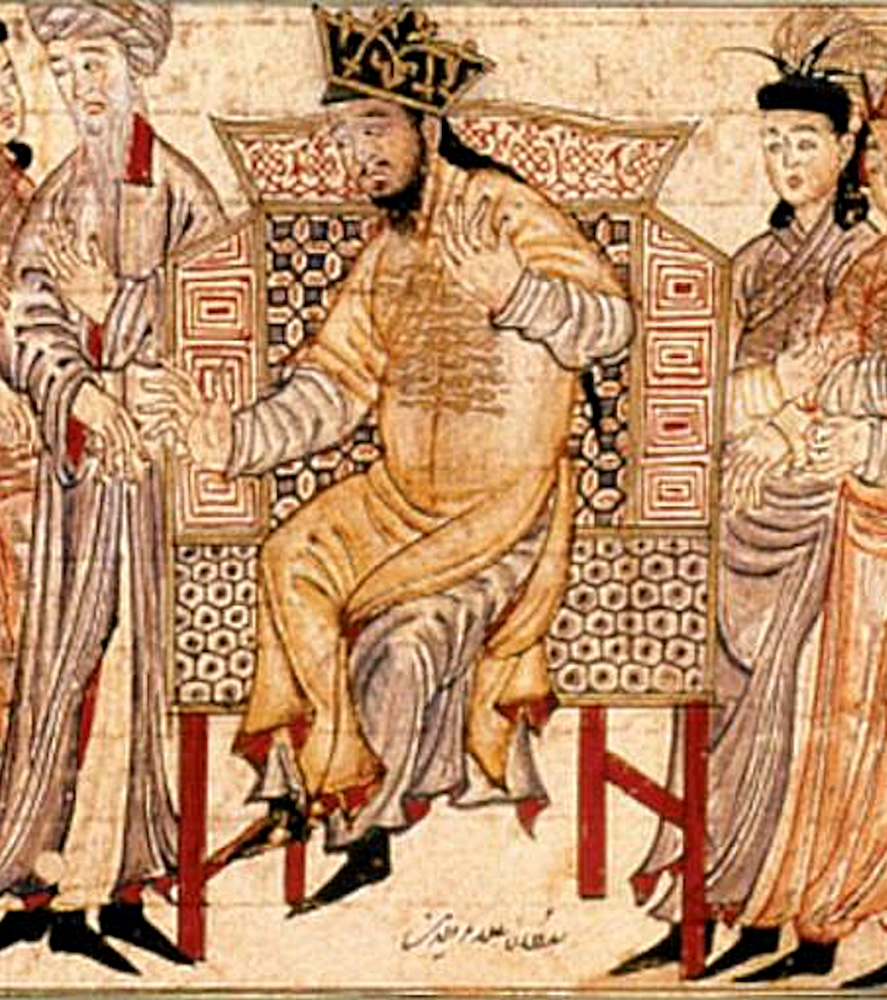
Ala-ud-din Khalji was governor of Kara on the Ganges, nephew and son-in-law of the Sultan of Delhi. In 1294 he marched south in secret with a few thousand horse, crossed the Vindhyas — which no northern army had done — and appeared before Devagiri while its army was away. Raja Ramachandra bought him off with a treasure so vast that Barani says nothing like it had been seen before.
Ala-ud-din did not take it to Delhi. He took it to Kara and used it to buy men. When his uncle Sultan Jalal-ud-din came downriver to congratulate him — unarmed, in a small boat, persuaded by Ala-ud-din's brother to leave his guard behind — he was embraced, kissed on both cheeks, and beheaded on the riverbank. 'Ah! thou villain, Ala-ud-din, what hast thou done?' were, by Barani's account, his last words.
The new sultan then bought his capital outright: every day, five maunds of golden stars were fired from an engine into the crowds outside the royal tent. Gribble treats the whole sequence as the opening of a curse — a run of Deccan gold that destroyed nearly every hand that closed on it.
In depthWhy this raid mattered more than its loot
Militarily 1294 was a raid, not a conquest — Ramachandra kept his throne and Devagiri kept its walls. Its importance is that it proved three things to Delhi at once: that the Vindhyas could be crossed, that the Deccan could not coordinate a defence, and that a single successful southern raid could finance a coup.
For the next thirty years the Deccan functioned as Delhi's treasury. Every serious political crisis in the north was paid for out of southern plunder — which is precisely why the raids kept coming back.
Malik Kafur rides to the southern sea
Ala-ud-din's campaigns of conquest were entrusted to Malik Kafur, a eunuch slave bought at Cambay who rose to command the empire's armies. In 1309 he besieged Warangal, felling the sacred groves around the city to build a timber stockade around his own camp — Amir Khusrau, who wrote the campaign up in verse, describes trees cut 'notwithstanding their groans' into a wall so solid that 'if fire had rained from heaven, their camp would have been unscathed'.
Prataparudra bought peace with his treasure — and, by one tradition, with a great stone from the Krishna mines that later became the Koh-i-Nur. Kafur left with a thousand camels groaning under the load.
In 1311 he went further than any northern army ever had: through Dwarasamudra of the Hoysalas and on to Madurai in the far south, sacking temple towns along the way and returning with 512 elephants, 5,000 horses and jewels by the maund. The Deccan and the deep south had been stripped — but not occupied. As Gribble put it: 'they bent, but they did not break.'
By the numbersThe loot of 1311, as the chroniclers counted it
| Elephants | 512 — a column said to stretch three parasangs |
| Horses | 5,000, Arabian and Syrian |
| Jewels | 500 mans — diamonds, pearls, emeralds, rubies |
| Reached | Madurai, roughly 2,000 km south of Delhi |
| Held | Almost nothing — the armies withdrew each time |
Good to knowThe pattern this set
These campaigns established the shape of the next century: the south was raided for treasure, not settled; local dynasties were made tributary and left in place; and the moment Delhi weakened, they simply stopped paying.
Every later Deccan power — Bahmani, Vijayanagara, and the five sultanates after them — inherited this logic of tribute, raid and reprisal, and fought over the same contested belt between the Krishna and the Tungabhadra.
The fall of Warangal
After a failed first attempt wrecked by a false rumour of the sultan's death, Ulugh Khan — the future Muhammad bin Tughluq — returned and took Warangal. Prataparudra and his family were sent north; he is said to have died on the road to Delhi. The city's very name was changed to Sultanpur, and Telangana became a province of the Delhi Sultanate.
The dispersal mattered more than the conquest. Warangal's officers, treasurers and soldiers scattered across the plateau. Some — the Musunuri Nayakas — would federate the Telugu chiefs and take Warangal back within thirteen years. Others rode south-west to the gorge of the Tungabhadra.
Among them, in the traditional account, were two brothers of the Kakatiya service: Harihara and Bukka.
LegendThe golden statue with a chain round its neck
When Prataparudra finally submitted, he did not simply send tribute. He sent a life-size golden image of himself with a golden chain about its neck — an object whose entire purpose was to say, without a word, that the man it portrayed was now a captive.
It is one of the more eloquent objects in this history, and nobody knows what became of it. It goes into the Delhi treasury in 1310 and out of the record entirely.
In depthWhat the conquest actually scattered
Empires are usually described as falling on their capitals. What happened here is better described as a dispersal, and it is the reason the fourteenth century in the Deccan looks the way it does.
Warangal's officers, treasurers, engineers and soldiers went in every direction. The Musunuri Nayakas federated the Telugu chiefs and took the city back within thirteen years. Others carried Kakatiya tank-building and temple-carving south into the Tungabhadra country, which is why the earliest Vijayanagara work looks so familiar.
Gribble, who admired the Kakatiya waterworks more than almost anything else in the Deccan, put it simply: they bent, but they did not break.
The march of a capital
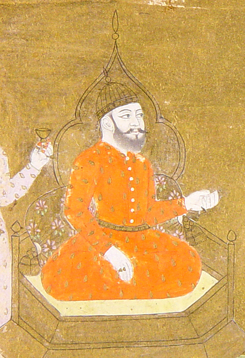
Muhammad bin Tughluq's logic was not mad. Delhi sat exposed to Mongol raids and hundreds of miles from the empire's richest new provinces; Devagiri sat almost exactly at the centre of his dominions, on a rock reputed impregnable. He renamed it Daulatabad, 'the abode of fortune', and ordered the capital moved.
The execution was the catastrophe. Barani — a hostile witness — writes that the order fell on the whole population, that 'not a cat or dog was left', and that the road south filled with the dying: 'many from the toils of the long journey perished on the road, and those who arrived at Deogiri could not endure the pain of exile. In despondency they pined to death.' Ibn Battuta, arriving later, was told of a blind man dragged the whole way until only a leg reached Daulatabad, and a cripple flung there by catapult.
By 1335 it was over. The sultan let those who wished return to a ruined Delhi. Within a decade his token copper currency had collapsed, famine had emptied the Doab, and his provinces were in revolt from Bengal to Ma'bar.
But the migration did not reverse itself. Scholars, Sufis, soldiers, poets, masons and administrators stayed in the south. That transplanted population is the raw material of everything that follows: the Bahmani sultanate, the Deccani sultanates after it, and the language — Dakhni — that grew out of their speech.
In depthWas it really that brutal? — the historians' quarrel
Barani is the source for almost all of the horror, and Barani despised Muhammad bin Tughluq and wrote after his death, for his successor. Modern historians read him carefully rather than literally.
The revisionist case: the order most likely targeted the Delhi elite — nobles, ulema, officials, craftsmen — rather than every inhabitant; the state provided a built road, staging posts and expenses, which Barani himself concedes ('the Sultan was bounteous in his liberality and favours to the emigrants'); and Delhi was clearly repopulated quickly enough to remain a great city.
What is not disputed is the outcome. Whether tens of thousands moved or hundreds of thousands, the transfer permanently implanted a north-Indian Persianate Muslim society in the Deccan — the single most consequential act of any Delhi sultan south of the Vindhyas.
By the numbersThe distance and the fortress
| Delhi to Daulatabad | About 1,100 km |
| The rock | A conical basalt plug rising roughly 200 m |
| The moat | Cut from living stone, some 40 m wide |
| The approach | A single dark spiral tunnel through the rock |
| The trap | An iron brazier that could fill the tunnel with fire and smoke |
| Times taken by assault | None — every fall was by treachery, hunger or terms |
Vijayanagara is founded
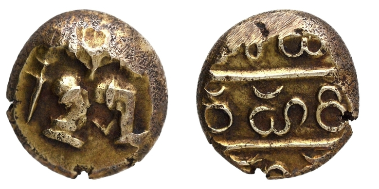
In the boulder-strewn gorge of the Tungabhadra, on ground already sacred as the Kishkindha of the Ramayana, the brothers Harihara and Bukka founded a city. They called it Vidyanagara, the city of learning, for the sage Vidyaranya said to have blessed it — and then Vijayanagara, the city of victory.
It was founded facing north, against the Sultanate. For the next two and a half centuries Vijayanagara was, in Gribble's phrase, 'the warden of the Hindu marches': the power that absorbed the shock of every invasion from the plateau, and the one southern state the Deccan sultans never managed to hold.
By the time it was destroyed it was, by the reckoning of the travellers who saw it, one of the largest cities on earth.
LegendThe hare that chased the hound
The founding legend says Harihara and Bukka were out hunting on the south bank of the Tungabhadra when their hounds put up a hare — and the hare turned and drove the dogs off. Astonished, they told the sage Vidyaranya, who read it as a sign that the ground itself gave courage to the weak. Build your capital here, he said, and no enemy will take it.
Variants of the same 'hare turns on hound' story attach to other Indian foundations, which is a good sign that it is a travelling motif rather than a memory. What it encodes is real enough: the site is a natural fortress of granite hills and river, and Vijayanagara was never taken by assault — only after its field army was destroyed elsewhere.
In depthWho were Harihara and Bukka? — an unsettled question
The most widely repeated account makes them treasury officers of Kakatiya Warangal (or of Kampili), captured and taken to Delhi, converted to Islam, sent back south as governors — and then reconverted by Vidyaranya and declaring independence.
This is disputed at almost every point. There is a long-running scholarly argument over whether the brothers were Telugu (Kakatiya service) or Kannada (Hoysala/Kampili service); the conversion-and-reconversion episode rests on late sources and is doubted by many historians; and Vidyaranya's role may have been retrospectively enlarged by the Sringeri monastery's own tradition.
What is solid: the empire was founded in the 1330s in the wake of the Sultanate's collapse in the south, by men who had been inside the Sultanate's system — which is exactly why they knew how to fight it.
The Centurions' revolt
The same collapse produced the other great Deccan power. Squeezed by Muhammad bin Tughluq's exactions, the Amiran-i-Sadah — the 'Centurions', the hundred-commanders of the Deccan — rose in revolt at Daulatabad. They first raised an Afghan officer, Ismail Mukh, as sultan; he proved too old for the work and stepped aside.
In his place they crowned Zafar Khan, who took the throne on 3 August 1347 as Ala-ud-din Bahman Shah, with Gulbarga as his capital. Delhi never recovered the Deccan.
So a single imperial failure produced, within eleven years of each other, the two states that would fight over the plateau for the next two centuries — Vijayanagara in the south and the Bahmani sultanate in the north — divided by the contested Raichur Doab between the Krishna and the Tungabhadra.
LegendHasan Gangu, the ploughman king
Ferishta tells it beautifully. Hasan was a labourer in Delhi working land for a Brahmin astrologer named Gangu. His plough struck a buried pot of antique gold coins — and he carried the whole of it, untouched, to his master.
Gangu, astonished, reported the honesty to the sultan (who made Hasan an officer of a hundred horse) and cast the young man's horoscope — in which he read a crown. He asked only two things: that Hasan take his name, and that when the crown came, he be made minister of finance. Hasan agreed, became Hasan Gangu, and kept both promises.
Asked in old age how he had won a kingdom with neither treasure nor army, the sultan answered: 'By affability to friends and enemies, and by showing liberality to all to the utmost of my power.'
In depth…and the version historians prefer
The dynasty's own name points somewhere else. 'Bahman' is the Persian hero Bahman son of Isfandiyar, and the Bahmanis claimed descent from him — a standard Persianate royal genealogy, and a far more likely origin for the name than a Brahmin master called Gangu.
Ferishta wrote some 250 years after the event, and the rags-to-throne story has the shape of court romance: honesty rewarded, prophecy fulfilled, a Hindu astrologer legitimising a Muslim king. Several historians read it as a founding myth designed to bind the new sultanate to its overwhelmingly Hindu population.
Both readings survive because both are useful — and neither can be proved.
Gunpowder, and a war begun over a song
Muhammad Shah I organised what his father had improvised: a standing army with a corps of archers, a body-guard of four thousand, and — decisively — artillery, worked by Turkish and European gunners. The Bahmanis had cannon in the Deccan roughly a century before the Mughals brought them to the north, and it is the single largest reason a smaller army kept beating a larger one.
He took Golconda from Warangal by treaty in 1364, along with a turquoise-blue throne of ebony plated with gold that every Bahmani king afterwards added a jewel to. At its inauguration, flushed with wine, he rewarded three hundred singers from Delhi with a draft drawn on the treasury of Vijayanagara. His minister quietly did not send it; the sultan insisted next morning that 'I did not give the order in intoxication, but in serious design'.
The Raya paraded the messenger through his city on an ass. The war that followed ran for years, and the chroniclers' arithmetic — however inflated — is grim: Ferishta reckons some 500,000 dead across Muhammad Shah's campaigns. It ended with the sultan swearing never again to kill the unarmed after a victory: 'from that time', Ferishta wrote, 'it has been the general custom in the Deccan to spare the lives of prisoners in war.'
Good to knowThe Raichur Doab — why they kept fighting
Almost every Bahmani–Vijayanagara war was about the same ground: the doab between the Krishna and the Tungabhadra, with the fortresses of Raichur and Mudgal in it.
It was fertile, it held the approaches to both kingdoms, and it sat astride the diamond country. It changed hands so many times over two centuries that Gribble simply calls it 'a debatable land'.
The ode that came instead of the poet
Firoz Shah Bahmani was the most cultivated ruler of the dynasty: astronomer, calligrapher, and — by Ferishta's account — able to speak with each of the women of his household in her own tongue, Arabic, Persian, Turkish, Kannada, Marathi, Telugu. He built an observatory near Daulatabad and sent ships each year from Goa and Chaul, with orders to bring back not only merchandise but talent.
He fought Vijayanagara three times, and after one victory forced Deva Raya to give him a daughter in marriage — riding into the enemy capital over six miles of cloth of gold laid down for him in the street.
His most quoted correspondent never arrived. Hafiz of Shiraz accepted the invitation, embarked on the Persian Gulf, met heavy weather, decided the game was not worth the candle, and sent an ode instead. The sultan judged that setting out counted, and paid him a thousand gold pieces for it.
He was deposed in 1422 by his own brother Ahmad, with the blessing of the saint Gisu Daraz — whom Firoz had offended, and who had prophesied the throne for the brother instead.
LegendThe beautiful Pertal of Mudgal
The most romantic of the Deccan's border wars began, Ferishta says, with a farmer's daughter at Mudgal called Pertal, so beautiful that a Brahmin returning from Benares stayed eighteen months in her father's house to teach her music and dancing.
He reported her to the Raya of Vijayanagara, who sent for her with jewels. She refused — she had always known, she told her parents, that she would marry a great prince of Islam. The Raya crossed the frontier to take her by force; the town emptied before he arrived and she escaped.
The war that followed ended with a Vijayanagara princess married to Firoz Shah — and Pertal, brought at last to Gulbarga, married to the sultan's son, because Firoz judged himself too old for her. 'Would that there were a Meadows Taylor still alive to give it to us,' sighs Gribble, who plainly wanted to write the novel.
Good to knowGisu Daraz — the saint who outlasted the sultans
Khwaja Bandanawaz Gisu Daraz, a Chishti Sufi of Delhi, came south to Gulbarga about 1400 at over eighty years old, and became the most influential religious figure in the Deccan. He wrote in Persian, Arabic — and in early Dakhni, making him one of the first authors of the language that became Deccani Urdu.
He fell out with Firoz Shah and backed his brother Ahmad. His dargah at Gulbarga still draws enormous crowds at his urs, six centuries later, Hindu as well as Muslim — one of the very few institutions in this history with continuous life from the 15th century to today.
The capital moves to Bidar
Marching back from a campaign, Ahmad Shah Wali halted at the old town of Bidar, liked its height, its air and its water, and decided to move his kingdom there. The new city — Ahmadabad Bidar — was finished in 1431–32, and the court left Gulbarga for good.
Bidar sits on a laterite plateau, and its builders exploited the stone: a triple moat hewn out of solid rock, and a karez system of underground aqueducts, sunk with vertical shafts in the Persian manner, that brought water into the city from miles away and still runs in places.
The Russian merchant Athanasius Nikitin, who spent time here in the 1470s, found roads safe, villages at every stage, and a king with an army he numbered in the hundreds of thousands — with war elephants in steel armour, scythes bound to their trunks.
Good to knowBidriware — the craft the city gave its name to
Bidar's other export is a metal: a black zinc-copper alloy inlaid with silver and gold in flowing arabesques, made nowhere else, and named for the city.
The finishing step is the strange one. The piece is blackened by rubbing it with a paste of soil taken from inside Bidar fort — earth long shielded from sun and rain, whose chemistry blackens the alloy while leaving the silver inlay bright. Craftsmen insist no other soil works as well.
Bidriware holds a Geographical Indication tag today, but the trade is a fraction of what it was.
An ambassador counts the walls
Abdur Razzaq Samarqandi arrived at Vijayanagara in April 1443 as ambassador of the Timurid Shah Rukh, and left the single most detailed description of the city at its height.
He counted seven concentric lines of fortification, fields and gardens between the outer rings, and from the third ring inward a solid mass of markets and shops. He described bazaars broad and long, always stocked with fresh flowers; craftsmen quartered by trade; streams running in polished stone channels; a mint whose chambers held masses of molten gold; a police office with 12,000 men; and a bazaar of the dancing girls, 'very beautiful, rich and accomplished'.
What struck him hardest was ordinary wealth. Even market workers, he wrote, wore jewels and gilt ornaments in their ears, round their necks, on arms, wrists and fingers.
By the numbersWhat the travellers reported
| Abdur Razzaq, 1443 | Seven walls; outer circuit some 8 miles across |
| Nicolo de' Conti, c. 1420 | City circuit of 60 miles; 90,000 men fit to bear arms |
| Varthema, 1508 | Three walls, outer circuit 7 miles; 40,000 horsemen |
| Barbosa, c. 1514 | 900 elephants; 20,000 horses; free trade for Moor, Christian and Gentile |
| Paes, c. 1520 | 'As large as Rome, and very beautiful to the sight' |
| Modern estimate | Peak population often put at 300,000–500,000 |
In depthHow much of this should we believe?
Medieval travel figures are notoriously elastic — Conti's 60-mile circuit and Nikitin's 300,000-man army are not measurements, they are expressions of astonishment.
But archaeology has been kinder to these accounts than usual. Survey of the Vijayanagara metropolitan area has traced multiple defensive circuits, enormous water systems, aqueducts and tanks, and an urban spread of some 25 square kilometres in the core with settlement scattered over several hundred more. The city genuinely was among the largest in the world of its day — plausibly second only to Beijing.
The wealth is corroborated too, from an unfriendly source: the sultanates' own accounts of the loot taken in 1565.
Mahmud Gawan takes Goa
Mahmud Gawan came from Gilan on the Caspian as a merchant, stayed as a servant of the Bahmani state, and became the most capable administrator the Deccan produced before Salar Jung. He reformed the provinces, insisted troops be counted and actually paid, and campaigned along the western coast — taking Goa from Vijayanagara in 1472 and opening the sultanate's best window on the Indian Ocean.
He is best remembered for two things. One is what he did with his money: returning in triumph from the coast, he distributed his jewels and property to scholars and Sayyids, kept only his horses, elephants and his library, and afterwards walked the city in disguise on Fridays handing out coins — telling the poor they came from the sultan.
The other is the madrasa he built at Bidar in 1472: a three-storey Persian-style college with lecture halls, a mosque, a library of some 3,000 manuscripts and free lodging for students, its whole façade sheathed in coloured tilework and flanked by minarets over 30 m high.
By the numbersThe madrasa at Bidar
| Built | 1472, by the minister himself |
| Form | Three storeys around a court; lecture halls, mosque, library |
| Library | About 3,000 manuscripts |
| Decoration | Glazed tile mosaic in green, yellow and white over the whole front |
| Minarets | Over 30 m; one still stands |
| Ruined | 1696 — used as a powder magazine, which exploded |
Good to knowDeccanis against Afaqis — the fault line
The Bahmani state was split by an argument about who counted as a native. On one side the Deccanis — Deccan-born Muslims, together with the Habshis, Africans of the military households. On the other the Afaqis or 'foreigners' — Persians, Turks and Arabs who kept arriving by sea and were given the best commands.
They differed in language, in sect (the newcomers were often Shia), and in patronage. The rivalry produced repeated massacres — most infamously at Chakan in 1446 — and it is the reason a wealthy, well-armed sultanate came apart in a single generation.
Mahmud Gawan was an Afaqi. His murder was a Deccani victory, and it destroyed them both.
The murder of Mahmud Gawan
His enemies could not beat him, so they forged him. An Abyssinian slave with charge of the minister's seals was made drunk and induced to stamp a blank sheet; above the seal his rivals wrote a letter to the Raja of Orissa inviting an invasion and promising to join it.
Sultan Muhammad Shah III, drunk himself, read it and sent for the old man. Warned, and offered ten thousand horse to escape with, Mahmud Gawan refused: 'This beard has grown white in the auspicious service of the father, and it will be honourable should it be dyed with my blood by the fortunes of the son.'
Shown the letter, he said the seal was his and the letter was not. The sultan rose and ordered him killed on the spot. His last words to the king were a prophecy: 'The death of an old man like me is of little moment to myself, but to you it will prove the ruin of an Empire, and of your own glory.' He was seventy-eight.
The sultan learned the truth too late, drank himself into fits in which he cried that Mahmud Gawan was tearing him to pieces, and died within the year. Ferishta gives the chronogram for his death — the letters of the phrase adding to the year — as the ruin of the Deccan.
In depthThe seventeen years from murder to break-up
The collapse was fast. With the Afaqi party leaderless and the Deccani party triumphant but incompetent, the great provincial governors simply stopped pretending.
Yusuf Adil Shah declared himself at Bijapur in 1490; Malik Ahmad at Ahmadnagar the same year; Fathullah Imad-ul-Mulk in Berar; the Barid Shahis took control of the person of the sultan at Bidar itself; and Sultan Quli held Golconda from 1496 as governor, formally independent by 1518.
The last Bahmani sultans lived on as puppets with almost no territory. The sultanate that had been the strongest state in India south of Delhi ended not with a conquest but with an evaporation.
A sultan, or a stolen Ottoman prince?
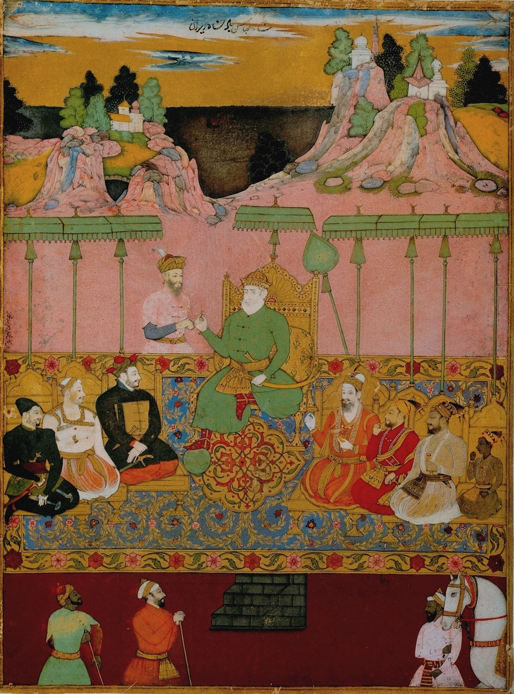
Yusuf Adil Shah declared independence at Bijapur in 1490 and founded the most brilliant of the Deccan courts. His origins are one of the great unresolved stories of Indian history.
The dynasty's own account: he was a son of the Ottoman Sultan Murad II. When his brother Mehmed took the throne and ordered the customary strangling of rivals, his mother bought a Circassian slave boy of the same age, gave him to the executioners, and smuggled the seven-year-old prince to Persia. Educated at Ardabil and Sava, he sailed for India at sixteen, entered Bahmani service — and rose to govern Bijapur.
In 1502 he did something no other Indian ruler had done: he declared Shi'ism the state religion, with the Persian rite read in the mosques. His restraint about it is more striking than the act — 'my faith for myself and your faith for yourselves' — and though it provoked a brief 'holy war of the four brothers' against him, he survived it and reverted the public rites rather than fight over doctrine.
In depthPrince or slave? — what historians think
The Ottoman-prince story comes to us through Ferishta, who wrote at the Bijapur court and had every reason to record the dynasty's preferred genealogy. Ottoman sources know nothing of a surviving son of Murad II sold into slavery.
The likelier reconstruction is that Yusuf was a Turkoman or Georgian slave brought into the Bahmani household — which is not a lesser origin in this world so much as a different one. The Deccan sultanates were repeatedly founded by men who arrived as slaves or converts: Malik Ahmad's father was a Brahmin captive; Malik Ambar was an Ethiopian slave; the Bahmanis' own founder was, in legend, a ploughman.
The claim, true or not, tells you what a Deccan sultan wanted to be: Persianate, royal, and connected to the great Islamic world beyond India.
The Turkoman who came from Hamadan
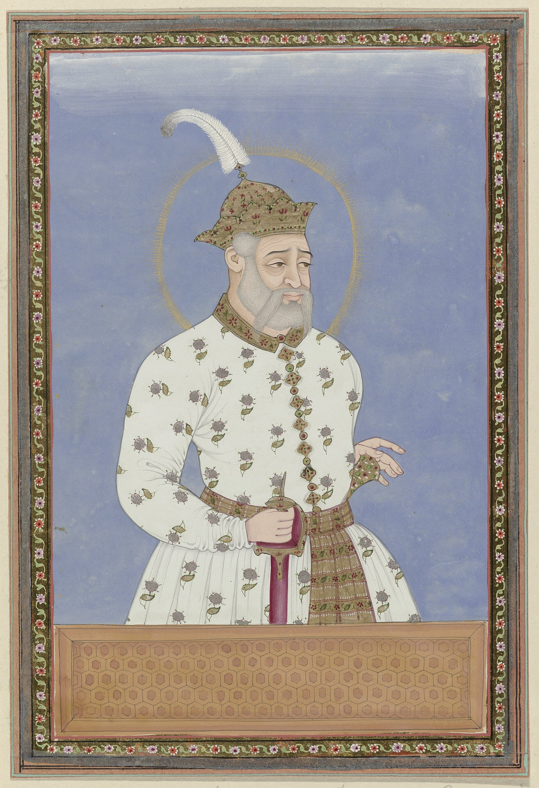
Sultan Quli was born near Hamadan in western Persia, of the Qara Qoyunlu — the 'Black Sheep' Turkomans, who had ruled much of Persia and Iraq until the rival Aq Qoyunlu, the 'White Sheep', destroyed them in the 1460s and 70s. His family were on the losing side of that catastrophe.
He came to India as a young man in the company of his uncle Allah-Quli, took service with the Bahmani sultan Mahmud Shah, and rose fast — winning the title Qutb-ul-Mulk, 'pillar of the state', and the government of Telangana with its fortress of Golconda. As the Bahmani state dissolved around him he simply kept governing; the formal declaration of independence came late, and he never took the title of sultan in his own lifetime.
He rebuilt Golconda from a Kakatiya mud fort into a granite citadel, and ruled from it for the better part of half a century. He was murdered at prayer in the mosque — old, by every account extremely old — on the orders of his own son Jamsheed.
In depthHow old was he? — a disputed death
Sultan Quli's age at his murder in 1543 is given very differently by different sources: Gribble's account has him ninety, and other traditions push it as high as ninety-nine. Modern reference works generally give more conservative figures.
The disagreement matters less than what it signals — that he was already a legend within living memory, and that a very long reign (he had held Telangana since the 1490s) invited round numbers.
LegendGolla-konda, the shepherd's hill
The name is usually explained by a story: a shepherd boy grazing on the granite hill found an idol there, the news reached the Kakatiya king, and a mud fort was raised around the sacred spot. Golla konda — shepherd's hill.
Whatever the truth of the boy, the geology is why the fort exists. The hill is a single granite mass rising about 120 m over a flat plain, visible for miles and defensible on every side — and the Qutb Shahs spent decades wrapping it in walls.
Krishnadevaraya
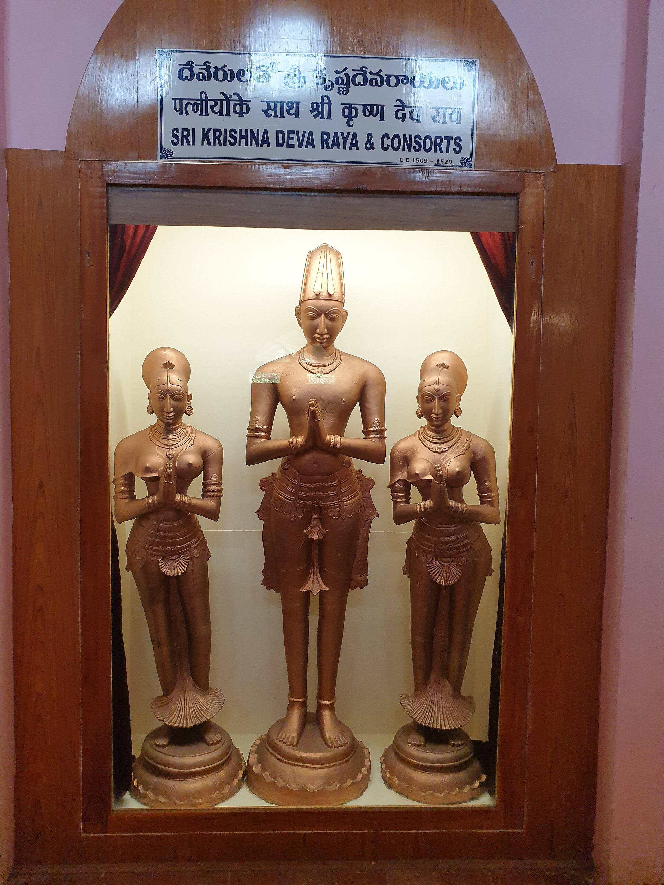
Under Krishnadevaraya the Vijayanagara empire reached its greatest extent, from the Krishna to Cape Comorin and coast to coast. He took Raichur in 1520 in a campaign that broke the Bijapur army; he subdued Orissa; and he handled the newly arrived Portuguese as a supplier rather than a threat — buying their Arabian horses, which the south could not breed, at extraordinary prices.
He was also a poet in Telugu. His Amuktamalyada is both a devotional poem and a manual of statecraft: a king, he wrote, should tax lightly, protect merchants, and keep the forest peoples on his side.
The strangest fact about his reign is silence. Gribble notes that the Muslim historians — otherwise obsessive about Vijayanagara — barely mention him, and never by name, though inscriptions and Portuguese accounts show him ruling the whole south for twenty years.
By the numbersThe economy of an empire
| The coin | The gold varaha or pagoda, stamped with Vishnu's boar |
| Horses | Imported in thousands a year — Portuguese Goa the main gate |
| Why | The Deccan could not breed cavalry mounts; both sides had to buy |
| Diamonds | Sold openly in the bazaars, said the Portuguese, by the parcel |
| Reach at his death | Krishna river to Cape Comorin, sea to sea |
Talikota
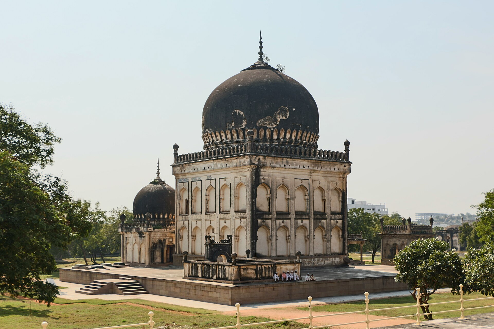
The sultanates had spent seventy years fighting each other while the aged regent Rama Raya played them off, hiring their soldiers, humiliating their envoys and treating their kings as clients. In 1565 Bijapur, Ahmadnagar, Golconda and Bidar did the one thing he had assumed they could not: they allied, sealing it with royal marriages.
The armies met on 26 January 1565 near Talikota, on the Krishna. Rama Raya — well past eighty — directed the battle from a jewelled throne with heaps of coin around him to reward his men. Then his litter went down, he was captured, and he was beheaded on the field. His head raised on a spear broke the army; the rout became a slaughter.
The city was not defended. Its treasury was carried off, the sultans' armies stayed months plundering, and what could not be carried was smashed. Two years later a Venetian traveller found the houses standing and the streets empty but for wild animals. Vijayanagara was never reoccupied.
The victory destroyed the victors' own security. The one power that had forced the sultanates to cooperate was gone — and within twenty-five years the Mughals were at their northern gate.
In depthThe battle's disputed turn
Many accounts say the day turned on treachery: two Muslim commanders in Vijayanagara's service — the 'Gilani brothers' — changing sides at the critical moment.
Others put more weight on artillery. The sultans' guns were better handled, and Rama Raya's decision to command from a litter in the middle of the line made him both visible and fatally slow to move.
Casualty figures — often quoted at 100,000 — are chronicle arithmetic and should be read as 'catastrophic' rather than counted. What is not in doubt is that the empire's field army ceased to exist in an afternoon.
Good to knowWhat the plunder tells us
The Portuguese historian Faria y Sousa reports that even after the inhabitants had carried away 1,550 elephant-loads of money and jewels, the sack ran for five months.
Ali Adil Shah's personal share is said to have included a diamond the size of a hen's egg. Whether or not the stone is real, the claim only makes sense in a world where Golconda's mines were feeding the region — and it is the same wealth that will bring the Mughals south.
Hyderabad is founded
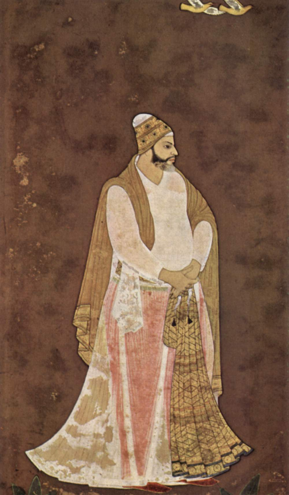
Golconda was full. Water was short on the granite, and epidemic disease periodically swept the crowded fort. In 1591 Muhammad Quli Qutb Shah — fifth of his line, and a considerable poet — laid out a new city on the south bank of the Musi, five miles east of the fortress: a planned grid with a great ceremonial crossing at its heart.
At that crossing he raised the Charminar, four arches and four minarets, with a mosque on its top storey. North of it he built the Char Kaman, four gateways; nearby the Badshahi Ashurkhana with its tilework, and later the enormous Mecca Masjid, built with bricks made — tradition says — from earth carried from Mecca.
He wrote in Persian, Telugu and Dakhni Urdu, and his collected verse is one of the earliest substantial divans in the language that became Urdu. The city he built is the one this whole history has been travelling towards.
LegendBhagmati, and the name of the city
The story everyone in Hyderabad knows: the young prince fell in love with a dancer named Bhagmati from the village of Chichlam across the Musi, swam the flooded river to reach her, and when he became king built the city for her and called it Bhagnagar — renaming it Hyderabad after she took the title Hyder Mahal.
Historians are divided and many are sceptical. Contemporary references to 'Bhagnagar' exist, but the etymology may run through bagh (garden) instead; and the Bhagmati romance is not securely attested in the earliest sources. Some scholars read it as a later legend that fused a real consort with a folk tale.
The rival explanation is simply pious: Haydar, a title of Ali, making Hyderabad 'the lion's city'. Both stories are still told, often in the same breath.
LegendWhy the Charminar was built
The best-loved account says the sultan built it as a votive offering — he had prayed for the end of a plague that was devastating his people, and raised the four minarets on the spot where he prayed when it lifted.
It is a good story with weak documentation, and a competing view holds the Charminar was simply the ceremonial centrepiece of a planned city, marking the crossing of its two principal axes.
Both may be right. It would not be the only monument in this history that was a piece of town planning and a prayer at once.
Chand Bibi holds the breach
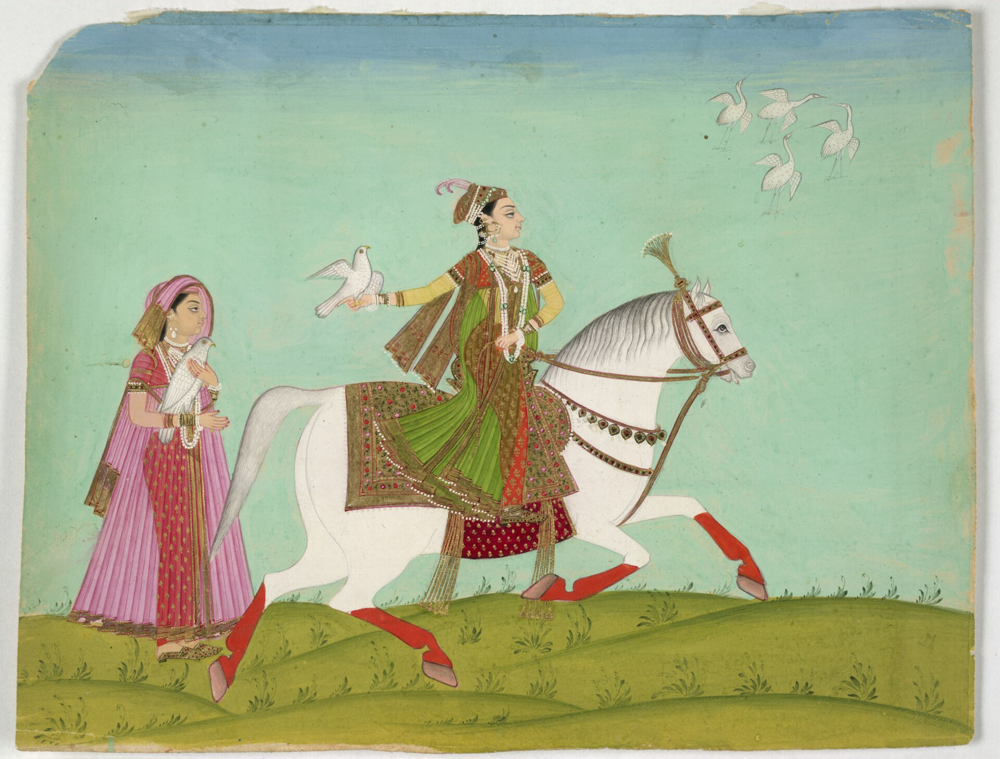
Chand Bibi was a daughter of Ahmadnagar, queen of Bijapur by marriage, and regent of both kingdoms in turn — one of the very few figures respected across the whole quarrelsome Deccan.
In 1595 Prince Murad's Mughal army mined the walls of Ahmadnagar. When the mines went and a breach opened, most of the officers prepared to run. Chand Bibi came to the breach in armour, veiled, with a drawn sword, and held it — and through the night the wall was rebuilt behind her while she stood there. The assaults failed; the Mughals withdrew, saluting her as Chand Sultana.
Five years later a second Mughal army came. Her own mutinous soldiery, told by a traitor that she meant to sell the city, broke into the palace and killed her. Ahmadnagar fell within days — the first of the five kingdoms to go.
Good to knowA monument misnamed
The handsome domed building outside Ahmadnagar that everyone calls 'Chand Bibi Mahal' has nothing to do with her. It is the tomb of Salabat Khan II, a minister of the Nizam Shahi court, standing on a hill about 13 km from the city.
The misattribution is old and immovable — a good example of how a strong enough legend simply annexes the nearest impressive ruin.
In depthMeadows Taylor's verdict
Colonel Meadows Taylor, the 19th-century soldier-novelist who knew the Deccan better than almost any Englishman, put her beside Elizabeth I — a contemporary — and thought the comparison flattered neither.
'Few in England know that the contemporary of our Queen Elizabeth in the Deccan was a woman of equal ability, of equal political talent… who, among all the women of India, stands out as a jewel without flaw and beyond price.'
Malik Ambar defies an empire
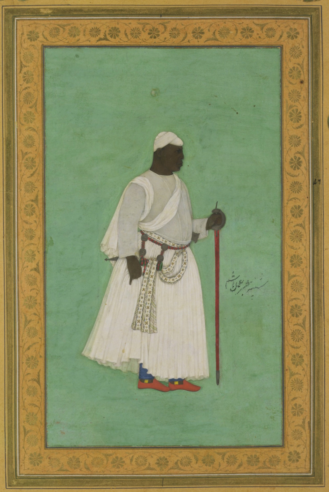
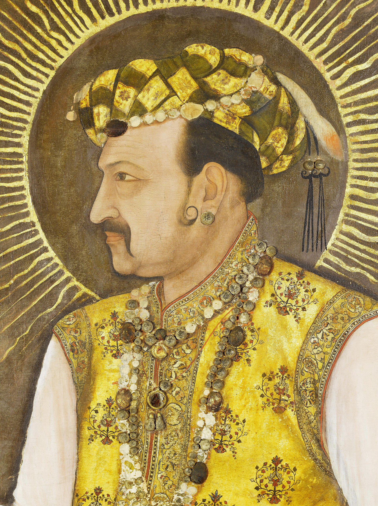
He was born in Harar in Ethiopia, sold as a boy, carried through Baghdad to the Deccan, and freed on his master's death. After Ahmadnagar fell he did not accept that it had: he found a Nizam Shahi prince, put him on a throne, and ran the state himself for twenty-six years.
He beat the Mughals not by meeting them but by refusing to. His light cavalry cut supply lines, emptied the country ahead of imperial armies, and struck at the rear — the tactics the Marathas would perfect two generations later, learned in large part here.
He was as good an administrator as a general. His revenue settlement — surveyed, assessed in cash, moderate — was so sound it survived him by two centuries. He founded the city of Khadki, later Aurangabad, and built the Nehr-e-Ambari, an underground water system that supplied it.
The Emperor Jahangir could not defeat him and could not stop writing about him: 'the black-faced', 'that cursed fellow', 'the ill-starred'. He had a court artist paint an allegory of himself shooting an arrow through Malik Ambar's severed head, mounted on a spear — a portrait of a wish, not an event. Ambar died full of years and honour in 1626, and the state he had held together collapsed within a decade.
Good to knowThe Habshis of the Deccan
Malik Ambar was not a freak of fortune but the peak of a system. East African men — Habshis, Sidis — were brought into the Deccan sultanates as military slaves and, being outsiders with no local kin networks, were trusted with commands, fortresses and household troops.
Several rose extraordinarily high: ministers, admirals, kingmakers, and on the Konkan coast the Sidis of Janjira held an island fortress that neither the Marathas nor the Mughals ever took.
Their descendants remain in Karnataka, Gujarat and Maharashtra today.
The dome that should not stand
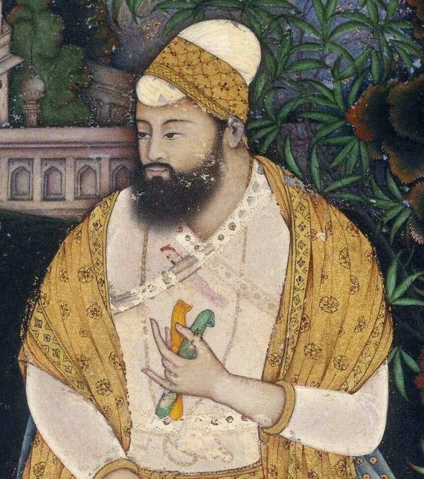
Muhammad Adil Shah's tomb at Bijapur, the Gol Gumbaz, is a single cube carrying one of the largest masonry domes in the world — roughly 44 m across, enclosing an unobstructed floor of about 1,700 m², larger than the Pantheon's.
The engineering is the interest. The dome is not held up by piers or a drum in the usual way: eight intersecting arches spring from the walls and cross each other, and the mass of masonry they throw inward acts as a counterweight to the dome's outward thrust. The builders solved a structural problem by inventing a bracket out of the building's own weight.
Around the base of the dome runs the Whispering Gallery, where a low sound carries clean around the circumference and a clap returns as a string of echoes. It is the most-visited acoustic accident in India.
The same generation built the Ibrahim Rauza — the tomb and mosque of Ibrahim Adil Shah II — a jewel of carved stone with chains cut from single blocks and jali screens like textile, and a persistent local claim that it inspired the Taj Mahal.
By the numbersGol Gumbaz
| Built | Begun 1626, completed about 1656 |
| For | Muhammad Adil Shah (r. 1627–1656) |
| Dome | About 44 m external diameter |
| Floor enclosed | About 1,700 m² — unobstructed |
| Structure | Eight intersecting arches acting as counterweight brackets |
| Corner towers | Seven storeys, giving access to the gallery |
Good to knowIbrahim II — the sultan they called Jagat Guru
Ibrahim Adil Shah II (r. 1580–1627) is the strangest and most likeable ruler in this history. A Shia sultan, he opened his book of songs with an invocation of Saraswati and Ganesha, called himself the son of Saraswati and Ganga, kept a favourite tambura he named Moti Khan, and had his subjects call him Jagat Guru — teacher of the world.
His Kitab-i-Nauras, 'the book of nine rasas', is a collection of songs in Dakhni set to Indian ragas — the courtly high-water mark of the Deccan's Hindu-Muslim fusion.
He also built an entire new suburb, Nauraspur, to house musicians and artists. It was left unfinished.
Shivaji and the tiger claws

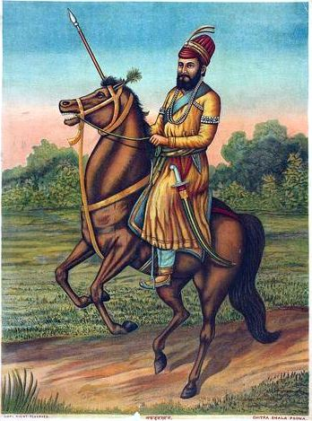
Bijapur sent Afzal Khan — a large, experienced and confident general — to finish the young Maratha chief Shivaji, who had been taking Bijapuri hill forts. Shivaji drew him deep into the Sahyadri hills, to a meeting place below Pratapgad, on terms: both to come unarmed, attended by one man each.
Shivaji came in armour under his robe with a concealed dagger and wagh nakh — 'tiger claws', a set of hooked blades worn hidden across the knuckles. In the embrace Afzal Khan was disembowelled. A signal gun brought Maratha infantry out of the wooded ravines onto the Bijapuri army below, and it was destroyed.
Whose treachery it was depends entirely on which chronicle you read: Maratha accounts have Afzal Khan striking first with a dagger in the embrace; Bijapuri accounts have a straightforward assassination. Shivaji built his enemy a tomb at the foot of the fort, which is still there.
For the Deccan sultanates it was the beginning of the end from below, at the same moment the Mughals were closing in from above.
In depthWho struck first — and why it cannot be settled
The Marathi bakhars say Afzal Khan pulled Shivaji into the embrace and stabbed at his back with a concealed bichhwa; the tiger claws answered a dagger already in motion. The Persian accounts of Bijapur and the Mughals say it was an assassination under flag of parley, arranged in advance.
There is no neutral witness. Both traditions were written by people with a stake in the answer, both within living memory, and both describe an event with two participants, one of whom did not survive it.
What is agreed: both men came armed in some fashion; the ground was chosen by Shivaji; and the Maratha infantry were already in the ravines when the signal gun went.
LegendThe tomb his enemy built him
Shivaji had Afzal Khan buried with Islamic rites at the foot of Pratapgad and raised a tomb over him. It is still there, and it has become one of the more contested small buildings in India — the subject of court orders, demolitions of the structures that grew up around it, and an annual argument.
The gesture reads differently depending on who is telling it: chivalry, propaganda, or ordinary statecraft by a man who had just made himself the enemy of a sultanate and needed his Muslim officers to stay.
Aurangzeb takes the last two kingdoms
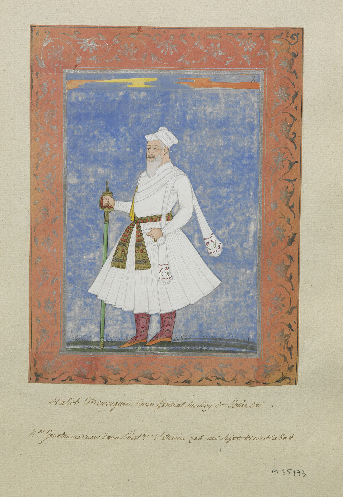
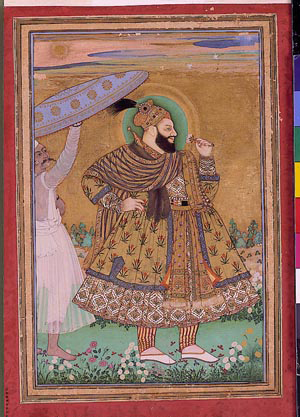
Aurangzeb came south in 1681 with a moving city of an army and the settled intention of ending the Deccan sultanates — heretical Shia states, in his reading, that had been paying and arming Marathas.
Bijapur went first. There was no storm: there was hunger. The city capitulated on 15 October 1686 after months of starvation, and the young Sikandar Adil Shah was brought before the emperor in silver chains.
Golconda was harder. The siege ran eight months. Mines were countermined, assaults were thrown back, and one night's escalade failed because a dog began barking on the wall — the dog was afterwards kept on a gold chain. The fortress fell only when an officer, Abdullah Khan Pani, was bought and opened a gate.
Abul Hasan Tana Shah met the end with more style than anyone else in this history. He went into his harem to take leave, came out, sat on his throne, ordered breakfast served as the imperial troops entered, greeted their commander courteously and rode out to lifelong imprisonment at Daulatabad — where he died in the Chini Mahal.
Good to knowAbdul Razzaq Lari — the loyalty Aurangzeb admired
Golconda's general refused every bribe the Mughals offered — tearing up the emperor's letter in front of his men — and when the gate was opened he charged alone into the victorious army.
He was found the next morning under a coconut tree with some seventy wounds, one eye destroyed, the skin of his forehead hanging over his face. Aurangzeb sent his own surgeons, and reportedly said that if Abul Hasan had possessed one more servant like him, the fortress would have taken far longer.
Offered rank and pardon on recovery, he refused while his master lived a prisoner: no one who had eaten Abul Hasan's salt, he said, could enter the service of the man who had destroyed him. He took service only a year later.
By the numbersThe plunder of Golconda
| Siege length | About eight months, ending September 1687 |
| Gold coin (huns) | Some 851,000 |
| Silver rupees | Over 2.5 crore |
| Total in rupees | Reckoned near 6.8 crore, plus jewels and plate |
| Copper coin | Counted in the billions of dams |
| The fort's record | Never taken by assault — only ever by an opened gate |
Aurangzeb's twenty-year war
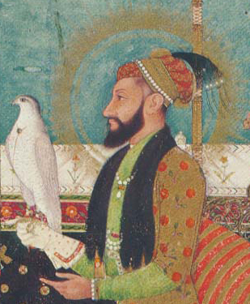
Having removed Bijapur and Golconda, the emperor found he had removed the buffer as well. For twenty years he besieged Maratha hill fort after hill fort while Maratha horse emptied the country behind him, and the Deccan — the richest region in India when he arrived — was reduced to a desert that could not feed his own camp.
He died at Ahmadnagar in February 1707, near ninety, and was buried at Khuldabad in an open grave paid for by money he had earned copying the Quran — no dome, no marble.
His last letters are the strangest documents in this history: 'I came a stranger into this world, and a stranger I depart… My valuable time has been passed vainly… I have committed numerous crimes, and know not with what punishment I may be seized.'
In depthThe Deccan ulcer
The costs compounded in three directions at once. The treasury drained into a war that could not be won by sieges; the north was left to govern itself; and the Deccan's revenue base — irrigation, villages, trade routes — was wrecked by the passage of armies for a generation.
Aurangzeb also gave the Marathas their curriculum. Two decades of campaigning against a mobile enemy taught the Marathas how to fight an empire, and by 1720 they were levying chauth — a quarter of the revenue — across much of the Deccan as protection money.
Historians have called the Deccan wars the ulcer that destroyed the Mughal empire. Gribble, writing in the 1890s, reached the same verdict from the Deccan's side.
The king-makers
The Mughal succession collapsed into a factory of puppets. Zulfiqar Khan, then the Sayyid brothers of Barha, raised and unmade emperors at will — blinding one, strangling another — and each king-maker in his turn met the dagger or the bowstring.
Through all of it Chin Qilich Khan, Nizam-ul-Mulk, viceroy of the Deccan, refused to play. He accepted the office of Vizier when it was pressed on him, found it unworkable, and left Delhi for the south — deciding, as Gribble puts it, to renounce 'for ever Delhi ambition and intrigue'.
In 1724 the emperor's court sent an army to remove him. He met it at Shakar Kheda, destroyed it, and made himself the master of the Deccan. Delhi, having no alternative, sent him the title Asaf Jah and its congratulations.
By the numbersDelhi, 1707–1719
| Emperors in twelve years | Eight |
| Bahadur Shah I | Died 1712, after a five-year war with his brothers |
| Jahandar Shah | Deposed and strangled, 1713 |
| Farrukhsiyar | Raised by the Sayyids, blinded and killed by them, 1719 |
| Rafi ud-Darajat | Reigned about three months |
| Shah Jahan II | Reigned about three months |
| The king-makers themselves | Both Sayyid brothers dead within two years |
Good to knowThe man who declined
Chin Qilich Khan was offered the thing everyone else was killing for — the Vizierate, the office that ran the empire — and took it, held it briefly, and walked away south.
The judgement behind that is the whole of his career. The empire's centre had become a place where power was real for about eighteen months and then fatal. The Deccan was a province he already knew, far from Delhi, rich, and defensible.
Gribble's phrase for the decision is that he renounced for ever Delhi ambition and intrigue. Every Nizam who followed him lived off that choice.
The French years
Asaf Jah's death in 1748 opened a succession war that the Europeans turned into their own contest. Dupleix, from Pondicherry, backed one claimant; the English backed another; and the Deccan discovered what disciplined infantry with artillery could do.
The Marquis de Bussy commanded the French corps attached to the Nizam Salabat Jung — 500 Europeans and a few thousand trained sepoys — and with it beat Maratha armies many times its size, at Bidar and again near Poona. He was paid with the revenues of the Northern Circars, the entire east-coast strip, which made him effectively a French governor within the Nizam's state.
When Bussy was recalled in 1758, the Nizam wept in open durbar and called him the guardian angel of his life and fortune. Within three years the French had lost Pondicherry and the century's argument. The door was open for the English.
In depthThe invention that changed India
What Bussy demonstrated at Hyderabad was the subsidiary force: a small, permanently paid, European-officered army stationed inside an Indian state, funded by that state's own revenue, and answerable to a foreign power.
Dupleix invented the model; the British perfected it and used it to acquire India without, at first, conquering it. Hyderabad was where it was proved.
It is the reason this state's later history turns so much on money: the subsidiary bargain converts a military relationship into a permanent debt.
The French corps is disbanded
Michel Raymond, a French officer from Gascony, had built the Nizam a European-drilled army of some 14,000 men with its own foundry, arsenal and powder mills — and was so loved by his troops that Hindus and Muslims alike called him Musa Ram and Moosa Rahim.
To the new Governor-General, Lord Wellesley, in a year when Bonaparte was in Egypt and Tipu was corresponding with the French, this was intolerable. Under the treaty of September 1798 the Nizam agreed to dissolve the corps and take an enlarged British subsidiary force instead.
Raymond had died that March. His successor could not hold the corps together; on 22 October 1798 British battalions surrounded the lines below Asmangarh hill, the sepoys — already mutinous over arrears — laid down their arms, and the most formidable French formation in India ceased to exist without a casualty.
Raymond's tomb still stands above the lines. An annual urs was held there for a Frenchman by Indian soldiers' descendants long after France had forgotten him.
LegendMusa Ram and Moosa Rahim
Michel Raymond was a Gascon who arrived in India as a trader, took service with the Nizam, and built him fourteen thousand European-drilled troops with their own foundry, arsenal and powder mills at a cannon works below Asmangarh hill.
His soldiers, Hindu and Muslim alike, called him Musa Ram and Moosa Rahim — the same name twice, in two religious registers, for a French Catholic. He is said to have worn Indian dress, and he is certainly buried under a simple black granite obelisk marked only J R.
An annual urs was held at his tomb by the descendants of his sepoys long after France had forgotten he existed. The Nizam's government kept up the observance into the twentieth century.
In depthWhy a treaty ended an army without a battle
The corps was dissolved in October 1798 without a shot because its position was hopeless before the first British battalion arrived. Raymond had died in March; his successor lacked his hold on the men; the troops were mutinous over arrears; and the Nizam had already signed.
The wider logic is Wellesley's, and it had nothing to do with Hyderabad. Bonaparte was in Egypt, Tipu was corresponding with the French, and a French-officered army of fourteen thousand in the middle of the Deccan was a strategic problem to be removed rather than a local arrangement to be tolerated.
What replaced it was larger, British-officered, and paid for by Hyderabad. That is the bargain the next century of this state turns on.
Seringapatam and Assaye
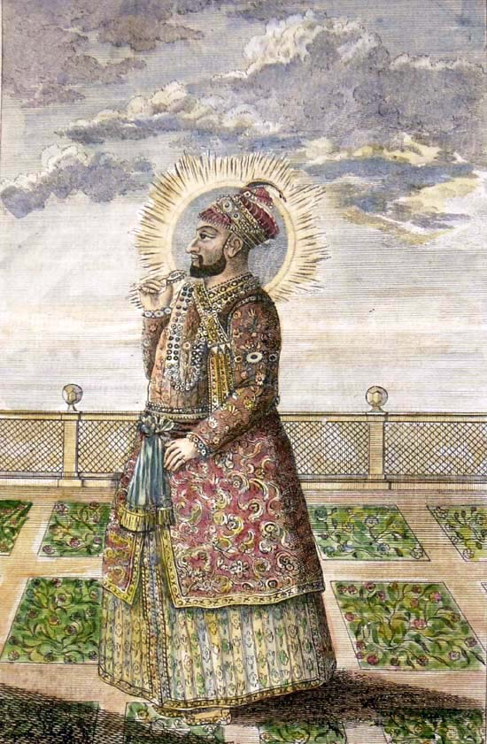
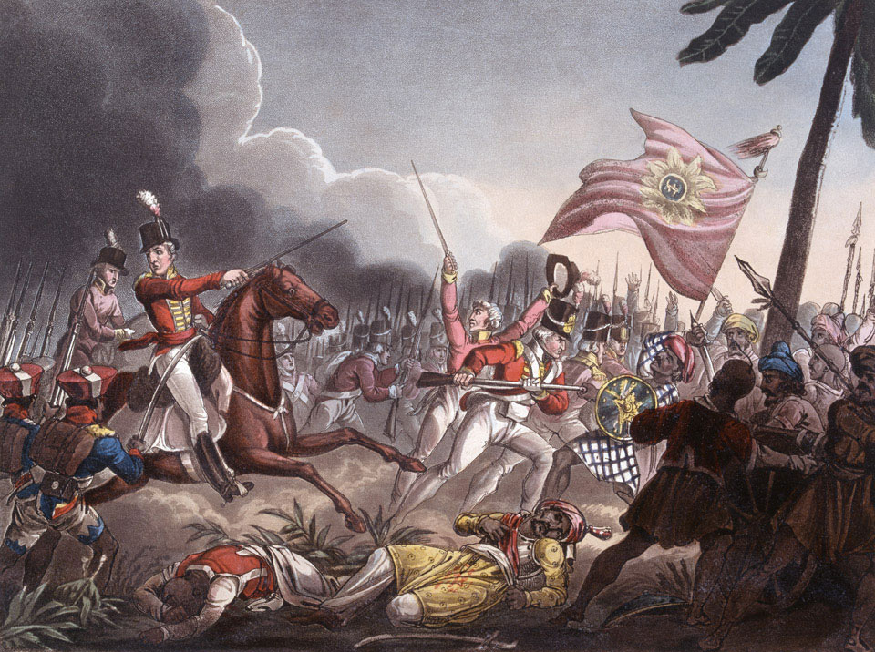
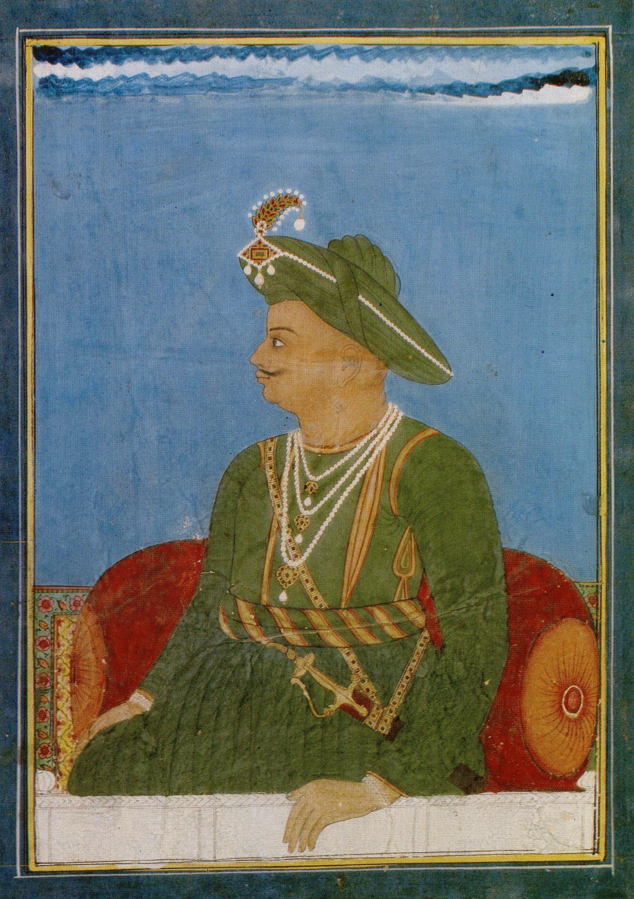

Hyderabad's contingent marched with the British to Seringapatam in 1799, where Tipu Sultan died in the breach; the Nizam took a large share of Mysore. He then handed almost all of it straight back in 1800, ceding it in perpetuity to pay for the Subsidiary Force — the districts that became Bellary, Anantapur, Cuddapah and Kurnool.
In 1803 Arthur Wellesley, commanding with the Nizam's troops beside him, met the combined armies of Scindia and the Bhonsle Raja at Assaye. He had some 9,500 men against perhaps 50,000 with far heavier guns; he crossed a river at an unmarked ford, took appalling casualties and won.
He called it, decades later and after Waterloo, the bloodiest action for the numbers he had ever seen — and the best thing he ever did in the way of fighting. Hyderabad's reward was the recovery of Berar.
By the numbersAssaye, 23 September 1803
| Wellesley's force | About 9,500, with 17 guns |
| Against | Perhaps 50,000, with 100 guns or more |
| British killed and wounded | 1,584 — about a third of those engaged |
| Guns captured | 98 |
| Horses shot under Wellesley | Two |
| His verdict, long after Waterloo | The best thing he ever did in the way of fighting |
LegendThe ford that was not on the map
Wellesley's guides told him there was no crossing of the Kaitna within reach. Looking across, he saw two villages facing each other on opposite banks and reasoned that people who build villages opposite one another must have a way between them.
There was a ford, on none of his maps. He put the army over it under fire and came out on the flank of a line drawn to meet him somewhere else entirely.
It is the kind of inference called genius when it works. The casualty list suggests how narrow the margin was.
Berar assigned
The Subsidiary Force was supposed to buy security. What it bought was a permanent liability: about forty lakhs of rupees a year in a time of complete peace, roughly a third of the state's revenue, for a contingent whose officers the Resident appointed and whose numbers no one would reduce.
The arrears mounted into an acknowledged debt. In 1853 Lord Dalhousie demanded, in terms that left no room for negotiation, the assignment of Berar — the state's richest cotton province — as security. Nasir-ud-Daula signed under protest: 'God forbid that I should suffer such disgrace.'
The debt itself was arguably fictitious. The British had for forty years pocketed the excise revenue of the Secunderabad and Jalna cantonments — money later admitted to be the Nizam's — which over that period roughly equalled the debt claimed. The Resident of the day, Colonel Davidson, wrote plainly that if the two governments' accounts had been dealt with impartially, 'we had no just claim on the Nizam'.
Berar was leased in perpetuity in 1902 for twenty-five lakhs a year. It never returned. It remained the great grievance of Hyderabad statecraft until the state itself ceased to exist.
By the numbersThe arithmetic of the grievance
| Contingent cost | About ₹40 lakh a year — c. one-third of state revenue |
| Treaty obligation | 15,000 troops in time of war — not a standing force in peace |
| Cost after the British took it over | Fell to about ₹24 lakh — without losing efficiency |
| Cantonment excise withheld | About ₹1 lakh a year, for 41 years |
| Understood cost of administering Berar | 2–4 annas in the rupee (12–25%) |
| Actual cost by the 1890s | Over 50% of gross revenue |
In depthGribble's own campaign
The author of this history spent a decade on the Berar question. His articles in The Pioneer and the Nineteenth Century put it before the British public, and led eventually to a debate in Parliament.
The 1902 settlement that followed — a perpetual lease at twenty-five lakhs — satisfied almost nobody in Hyderabad, since the province by then yielded far more and the Contingent it had been ceded to pay for was shortly afterwards abolished.
Volume II of this history breaks off, unfinished, in the middle of that argument. Gribble died before he could complete the chapter.
"If the Nizam goes, all goes"
Hyderabad sat between the mutinying north and a quiet south, and everyone knew what its choice was worth. The saying went round British India: if the Nizam goes, all goes.
In June 1857 seditious placards appeared on the city walls; in July a crowd gathered at the Mecca Masjid, raised the green standard, and moved on the Residency. It was met with grapeshot from the ramparts and by the minister's Arab troops holding the city gates. The rising broke.
The minister who held the line was Salar Jung, then thirty-one and a year into the job — and the British never forgot which man had held Hyderabad. In 1860 the debt was cancelled and Raichur, the Doab and Shorapur were returned; only Berar was kept.
In depthWhy Hyderabad's choice was worth so much
In 1857 the British position in the south rested on very little. The Madras army was quiet but stretched, the Bombay army was watching the Deccan, and almost every regular soldier who could be spared had gone north.
Hyderabad was the largest state in India, with its own army, a Muslim dynasty, and a population that had every reason to be unimpressed by the Company. If it had declared for the rebellion, the whole of the south would have had to be reconquered rather than merely held — and there was nothing to do it with.
That is the arithmetic behind the saying. It was not flattery; it was a description of what the British could and could not afford.
Good to knowWhat the loyalty was worth afterwards
- The debt that had cost Berar in 1853 was cancelled in 1860.
- Raichur, the Doab and Shorapur were returned.
- Salar Jung was made a GCSI; the Nizam's rank and salute were confirmed.
- Berar itself was not returned. It was leased in perpetuity in 1902 instead, and remained the standing grievance of Hyderabad statecraft until the state ceased to exist.
Salar Jung remakes the state
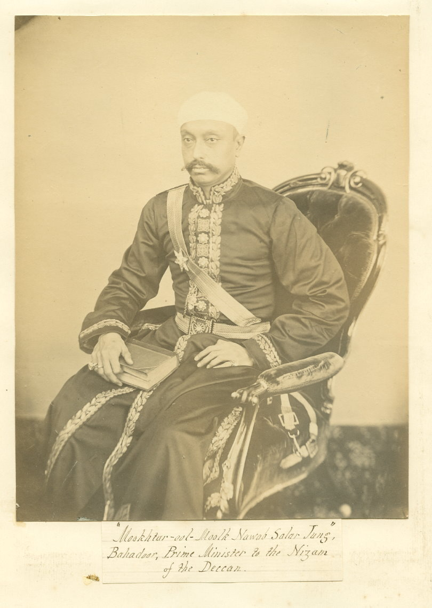
When Salar Jung became minister at twenty-four, Hyderabad had no district courts, no police force, and a revenue system in which talukas were auctioned to contractors who lived in the capital, sent deputies to squeeze the districts, and were replaced so often that a new deputy was said to ride facing his horse's tail, to see who was coming to displace him. Villages had emptied; land had gone out of cultivation.
His first and greatest reform was to abolish the farming of revenue outright and settle the land directly with the cultivator, field by field, at a fixed assessment. He then built the machinery a state needs: districts and talukas on a rational plan, a treasury, a police force, courts and magistrates in the mofussil, a customs and salt service, schools in every taluka, a medical school, the railway from Wadi.
The results were measurable. Revenue roughly trebled in thirty years; deserted villages were reoccupied; and a British Resident could write that the Hyderabad of 1860 stood to the old city 'as the England of the present day is to the England of the Stuarts'.
He died of cholera in a single night in February 1883, at fifty-six, after a day spent hosting a visiting Grand Duke. The Nizam broke down in open durbar. Arabs and Rohillas walked weeping in the funeral procession, and the crowd stripped the grave of its flowers to keep something of him.
Good to knowThe Salar Jung Museum
His grandson, Salar Jung III, spent a fortune and a lifetime collecting, and left the largest one-man art collection in the world — now a national museum on the Musi with tens of thousands of objects.
Its celebrated pieces include the Veiled Rebecca, a marble by Giovanni Benzoni in which the veil appears translucent; a double statue of Mephistopheles and Margaretta carved from a single block, one figure on each side of a mirror; and a 19th-century British musical clock in which a small figure emerges to strike a gong every hour, still drawing a crowd at the top of each hour.
The Musi flood

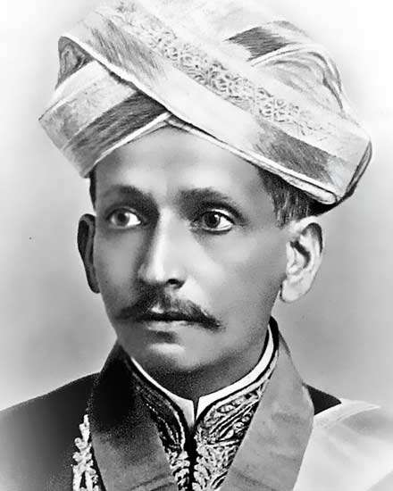
The rain of 27–28 September 1908 was extraordinary even by monsoon standards — a reported 17 inches in a day and a half. The Musi, normally a modest stream, rose through Hyderabad in the dark and took the old city with it. Whole quarters were erased; the Afzal Gunj bridge was overwhelmed; the death toll is usually given as around 15,000.
The tamarind tree in the grounds of Osmania General Hospital is said to have saved about 150 people, who clung in its branches through the night. It stood, hollow and propped, into the 21st century, and Hyderabad still calls it the flood tree.
The response is what makes 1908 a turning point rather than a disaster. Mahbub Ali Khan brought in the engineer M. Visvesvaraya, who reported a plan for the city: dam the Musi and its tributary upstream, widen and embank the channel, drive new roads and open the congested quarters.
Out of that came Osman Sagar (Gandipet) and Himayat Sagar, the reservoirs that both controlled the river and supplied the city's drinking water for generations, and the City Improvement Board that shaped modern Hyderabad.
By the numbersThe night of the flood
| Date | 27–28 September 1908 |
| Rainfall | About 17 inches in some 36 hours |
| Deaths | Usually given as c. 15,000 |
| Saved by the tamarind tree | About 150, by tradition |
| Engineer called in | M. Visvesvaraya |
| Result | Osman Sagar and Himayat Sagar; the City Improvement Board |
The richest man in the world
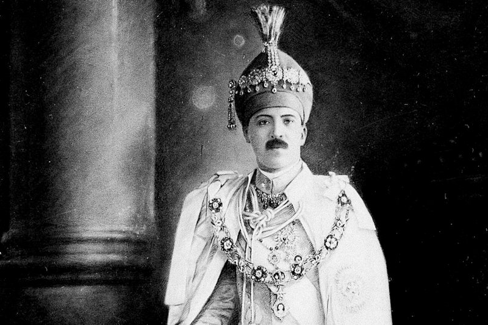
Mir Osman Ali Khan, seventh and last Nizam, appeared on the cover of TIME in February 1937 as the richest man in the world. The Jacob diamond — 184.75 carats, about twice the Koh-i-Nur — was found in the toe of his father's slipper and used, the story goes, as a paperweight.
The frugality alongside the wealth became legend: the same crumpled clothes, cheap cigarettes, guests offered tea in chipped cups, an obsession with small economies in a household of unimaginable scale.
What he did spend on is still standing. Osmania University with its enormous Arts College, the Osmania General Hospital, the High Court, the State Central Library, the City College, Jubilee Hall, the Nizamia Observatory — a public architecture in an invented Indo-Saracenic idiom, much of it designed by Vincent Esch and Zain Yar Jung, in pink granite and Deccan stone. The state ran its own currency, its own postage and its own railway.
Osmania University was founded in 1918 as the first Indian university to teach in an Indian language — Urdu — with a translation bureau created to produce the textbooks that did not yet exist.
Good to knowWhat the state actually was, by 1947
- The largest princely state in India — roughly 82,000 square miles, about 16 million people.
- Its own currency (the Hyderabadi rupee), its own stamps, its own railway, its own army and its own airline.
- A Muslim dynasty ruling an overwhelmingly Hindu population, with Urdu as the language of administration.
- Landlocked, and after 1947 entirely surrounded by the new Indian Union.
Operation Polo
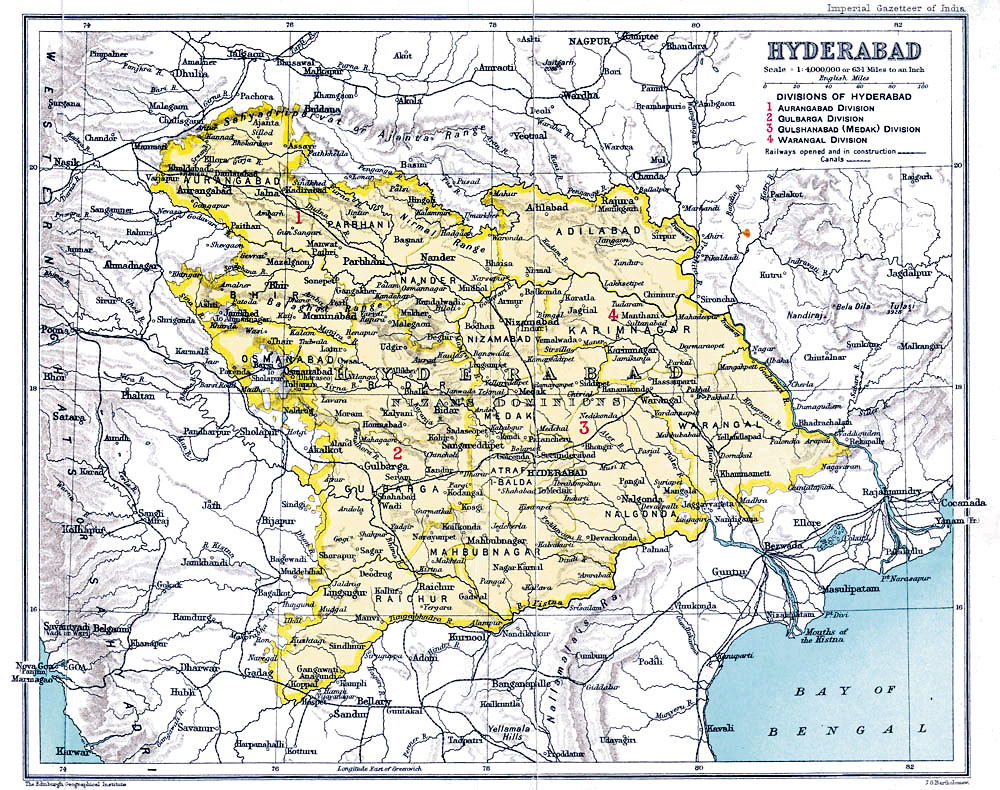
Hyderabad did not accede at Partition. It signed a Standstill Agreement, sought to remain independent, and its politics slid out of the Nizam's hands: the Razakar militia of Qasim Razvi terrorised the countryside, while a communist-led peasant revolt burned through Telangana against the landlords.
The Indian Army moved on 13 September 1948. The fighting lasted five days; the Hyderabad army surrendered on the 17th; the Nizam went on radio to accept accession. He was made Rajpramukh of the state until its reorganisation in 1956.
The violence that followed the operation was far worse than the operation. The Government of India sent a committee under Pandit Sunderlal to investigate communal killings in its aftermath; its report estimated deaths in the tens of thousands, and was not made public for around half a century.
With that, the last living fragment of the world in this history — the Deccan as a sovereign country, in a line running back through the Asaf Jahs and the Qutb Shahs and the Bahmanis to the ploughman crowned at Daulatabad in 1347 — came to an end.
In depthThe disputed toll
The military operation itself was short and its casualties comparatively small. The killings afterwards — largely of Muslims, in reprisal, across the districts — were not.
The Sunderlal committee's own estimate was in the range of 27,000–40,000 dead; other contemporary estimates ran far higher, and some later writers have argued for figures above 100,000. The report was suppressed and only became accessible decades afterwards.
It remains one of the least-taught episodes in modern Indian history, and the numbers are still contested.